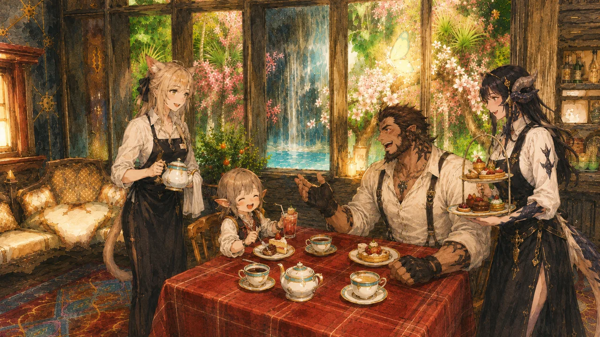

主
💬 坐檯陪聊
以各種身分入席對坐——溫柔醫生、小學老師、攻略嚮導、居酒屋老闆娘……市井百業任君指定。可挑選包廂場景（診療室、教室、和室茶間、溫泉雅座等），以 20 分鐘為一單位計時。
幻想友人帳 · RP Shop
在白銀鄉的溫泉一隅，有一間以「人」為菜單的店。
醫生、小學老師、市井百業——選一位 NPC、挑一間包廂，
以二十分鐘為一盞茶的長度，陪你聊上半晌、留一幀合影。


帳裡的席次尚在鋪陳。待門前燈籠點亮之日，即可在此留下您的名字。
Menu · 服務內容
主營坐檯陪聊與包廂拍照，佐以餐點；每 20 分鐘為一個計費單位，價目將於開幕時公告。
本店定位為輕〜中度 RP：以輕鬆聊天與情境點綴為主，想淺淺入戲或純聊天都歡迎，不強求演技、也不做重度連續劇情。
以各種身分入席對坐——溫柔醫生、小學老師、攻略嚮導、居酒屋老闆娘……市井百業任君指定。可挑選包廂場景（診療室、教室、和室茶間、溫泉雅座等），以 20 分鐘為一單位計時。
由專業攝影師入廂掌鏡，與您指定的 NPC 在主題包廂裡留下合影，成品精修後交付。
坐檯期間可隨時點餐——和風膳食、茶點與特調飲品，讓話題在杯盞之間更盡興。
不定期邀請演奏家蒞臨現場即興加演；預約時可許願，依演奏家檔期安排，不另收費時視為本店招待。
Hours · 開店時辰
帳中燈火，於下列時分為你點亮；實際開店以 Discord 公告與預約排班為準。
※ 需事先於 Discord 或預約表單登記，方能為你保留店員與包廂時段。
Pricing · 帳目・計費方式
緣分以「盞」計——每 20 分鐘為一盞茶的時光；下列價目為參考，正式價格以開幕公告為準。
50,000 Gil
100,000 Gil
＋50,000 Gil
＋100,000 Gil
＋5,000 Gil
依各包廂標示
5,000 Gil
※ 指名店員「服務性格」和「身分職業」將額外加收費用。
Order · 線上預約點餐
同行者的所有點餐與指名店員費用，將合併計入同一張帳單。
Our Staff · 店員名簿
留名於帳中的，皆是此店的一期一會。輕點照片，便能望見他們的身影特寫。
指名請直接在上方卡片勾選「☑ 指名」（最多 3 位）； 不勾選＝隨緣，由店家安排一位店員（隨緣與指名為不同價目）。接著完成以下服務設定：
目前指名：0 位（隨緣）
包廂各有容納上限，超過將無法送出。
加拍費用將支付給配合入鏡的店員與攝影師。
每間包廂各有風景與容納人數；點照片可放大瀏覽、左右換間。 未指定包廂者，將於「中央舞台區」開放區域入席（免費）——也能與店員互動、觀賞台上演出，座位先到先得。
您點選的料理（單點低消 5,000 Gil；未標價餐點暫不計入金額）：
尚未點選任何餐點。
本店為輕〜中度 RP 店——輕鬆互動為主、氛圍點綴為輔；期待重度沉浸劇情的旅人，建議先與幹部聊聊再預約。
請您配合的事
我們承諾的事
News · 活動告示板
帳中近期的祭事與優惠，皆張貼於此。
🎊 開幕特惠
開幕首月光臨的每一位旅人，餐點一律八折，並附贈本店特調飲品一杯；預約拍照服務者，加贈精修照片一張。
🌸 節慶活動
新年初詣、櫻花祭、盂蘭盆納涼祭——四季的祭事正在籌備中，詳情將於此告示板與 Discord 同步公告。
VIP · 貴賓優待
凡於帳中留下足跡的旅人，皆會記在友人帳上；緣分越深，回禮越厚。※目前禮遇僅供參考，待工作人員討論確定後會再發布更新版本，我們將以網站公告最新版優待為主。
累積消費 100,000 Gil——每次光臨贈特調飲品一杯，並優先收到節慶活動通知。
累積消費 300,000 Gil——享白帳全部禮遇，拍照服務免費一次，餐點常年九折。
累積消費 600,000 Gil——享朱帳全部禮遇，包廂與 NPC 陪聊時段優先預留，並登上貴客榜。
Ranking · 貴客榜
感謝與本帳結緣最深的貴客們。榜單由掌櫃每月更新。
壹虛位以待——— Gil金帳貴客
貳虛位以待——— Gil朱帳貴客
參虛位以待——— Gil朱帳貴客
肆虛位以待——— Gil常連さん
伍虛位以待——— Gil常連さん
Etiquette · 帳前約定
入帳之前，先讀一段小約定——讓每位旅人與店員，都能安心享受這場一期一會。
Positions · 招募職務
依商店需求而定，歡迎依你的專長與興趣認領。
規劃各主題包廂（診療室、教室、和室茶間、溫泉雅座…）的佈景與輪換，打造整體氛圍。
供應坐檯佐談的餐點、茶點與特調飲品，依商店需求備貨。
提供店內家具與庭具，依商店需求而定。
本店主力！以指定身分（醫生、小學老師、各行各業）入席包廂坐檯陪聊，依預約單準備角色設定與話題。
負責包廂合影服務：構圖打光、GPose 掌鏡與成品精修，拍出讓人驚豔的照片。
熱衷於把遊戲中的內容分享到社群媒體。
想參與 RP 商店的經營或演出？ 來 Discord 找我們聊聊 →